## **deadlocks** ## **operating systems** ### csci 3411 ### Prof. **Sibin Mohan** <br> _<font size="5"> acknowledgments: some content modified from Silberschatz et al. and West</font>_ --- so far we've seen... --- | problem/tool | lesson | | --- | --- | | **race conditions** | critical sections | --- | problem/tool | lesson | | --- | --- | | **race conditions** | critical sections | | **locks**, **condition variables** | easier abstractions | --- | problem/tool | lesson | | --- | --- | | **race conditions** | critical sections | | **locks**, **condition variables** | easier abstractions | | **fine-grained** locking | more parallelism <br> more **danger** | || --- today → yet another way synchronization goes **wrong**! --- ## deadlock --- set of **blocked** processes, each: --- set of **blocked** processes, each: - **holds** a resource <br> → critical section, device, memory --- set of **blocked** processes, each: - **holds** a resource <br> → critical section, device, memory - **waits** to acquire resource <br> → held by **another** process in set --- **blocked** processes, each **holds** resource, **waits** on other --- **blocked** processes, each **holds** resource, **waits** on other - **starvation** on **all** associated resources --- **blocked** processes, each **holds** resource, **waits** on other - **starvation** on **all** associated resources - result → lots of threads, **<span style="background-color: darkred; color: white;"> zero progress! </span>** --- ### example | two threads, two locks --- ### example | two threads, two locks <div class="multicolumn" style="display: grid; grid-template-columns: 50% 50%; gap: 20px; align-items: center;"> <div> <p>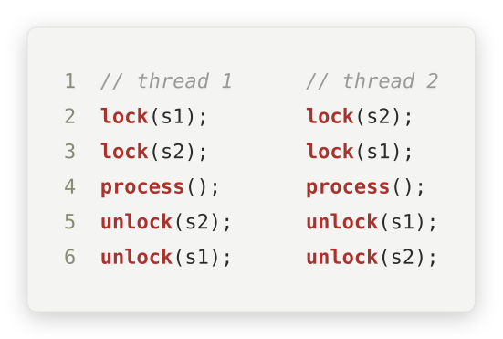</p> </div> <div> | thread | first | then | | --- | --- | --- | | thread 1 | <scb>s1</scb> | <scb>s2</scb> | | thread 2 | <scb>s2</scb> | <scb>s1</scb> | </div> </div> --- ### example | two threads, two locks <div class="multicolumn" style="display: grid; grid-template-columns: 40% 60%; gap: 20px; align-items: center;"> <div> </div> <div> | thread | first | then | | --- | --- | --- | | thread 1 | <scb>s1</scb> | <scb>s2</scb> | | thread 2 | <scb>s2</scb> | <scb>s1</scb> | <br> run **concurrently** → what can go wrong? </div> </div> --- ### example | two threads, two locks <p>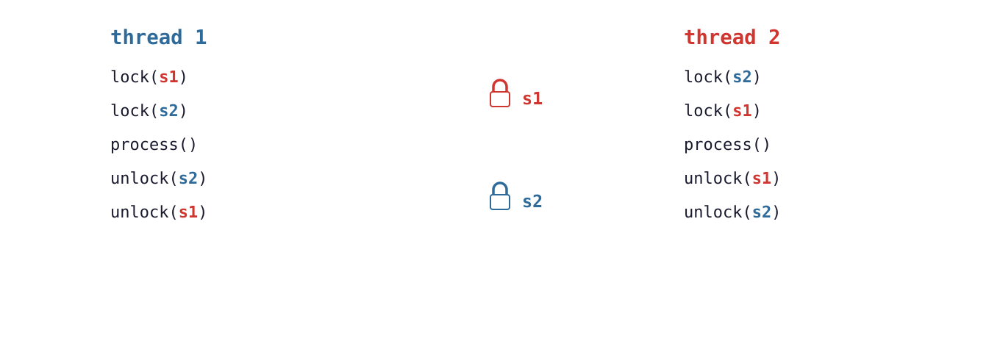</p> --- ### example | example | two threads, two locks <scb>T1</scb> takes <scb>s1</scb>, <scb>T2</scb> takes <scb>s2</scb> <p>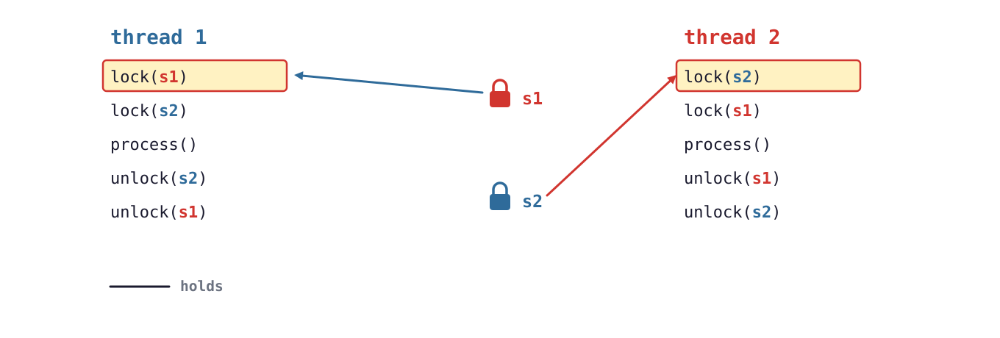</p> --- ### example | two threads, two locks each now waits → for lock the **other** holds <p>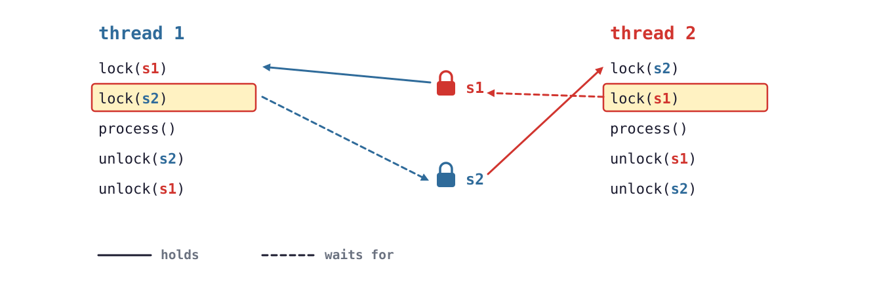</p> --- ### example | two threads, two locks ## **deadlock!** --- let's look at a `code` example using <scb>pthreads</scb> [<sc>Linux</sc>] --- ```C #include <pthread.h> #include <stdio.h> #include <unistd.h> pthread_mutex_t s1 = PTHREAD_MUTEX_INITIALIZER; // "red" lock pthread_mutex_t s2 = PTHREAD_MUTEX_INITIALIZER; // "blue" lock void *thread1(void *arg) { pthread_mutex_lock(&s1); usleep(1000); // widen the window: let thread 2 run pthread_mutex_lock(&s2); // waits for thread 2... printf("thread 1: processing\n"); pthread_mutex_unlock(&s2); pthread_mutex_unlock(&s1); return NULL; } void *thread2(void *arg) { pthread_mutex_lock(&s2); // opposite order! usleep(1000); pthread_mutex_lock(&s1); // waits for thread 1... printf("thread 2: processing\n"); pthread_mutex_unlock(&s1); pthread_mutex_unlock(&s2); return NULL; } int main(void) { pthread_t t1, t2; pthread_create(&t1, NULL, thread1, NULL); pthread_create(&t2, NULL, thread2, NULL); pthread_join(t1, NULL); pthread_join(t2, NULL); printf("done\n"); return 0; } ``` --- ```C [5-6|8-9|10|11|18-19|21|32-34] #include <pthread.h> #include <stdio.h> #include <unistd.h> pthread_mutex_t s1 = PTHREAD_MUTEX_INITIALIZER; // "red" lock pthread_mutex_t s2 = PTHREAD_MUTEX_INITIALIZER; // "blue" lock void *thread1(void *arg) { pthread_mutex_lock(&s1); usleep(1000); // widen the window: let thread 2 run pthread_mutex_lock(&s2); // waits for thread 2... printf("thread 1: processing\n"); pthread_mutex_unlock(&s2); pthread_mutex_unlock(&s1); return NULL; } void *thread2(void *arg) { pthread_mutex_lock(&s2); // opposite order! usleep(1000); pthread_mutex_lock(&s1); // waits for thread 1... printf("thread 2: processing\n"); pthread_mutex_unlock(&s1); pthread_mutex_unlock(&s2); return NULL; } int main(void) { pthread_t t1, t2; pthread_create(&t1, NULL, thread1, NULL); pthread_create(&t2, NULL, thread2, NULL); pthread_join(t1, NULL); pthread_join(t2, NULL); printf("done\n"); return 0; } ``` --- ```C #include <pthread.h> #include <stdio.h> #include <unistd.h> pthread_mutex_t s1 = PTHREAD_MUTEX_INITIALIZER; // "red" lock pthread_mutex_t s2 = PTHREAD_MUTEX_INITIALIZER; // "blue" lock void *thread1(void *arg) { pthread_mutex_lock(&s1); usleep(1000); // widen the window: let thread 2 run pthread_mutex_lock(&s2); // waits for thread 2... printf("thread 1: processing\n"); pthread_mutex_unlock(&s2); pthread_mutex_unlock(&s1); return NULL; } void *thread2(void *arg) { pthread_mutex_lock(&s2); // opposite order! usleep(1000); pthread_mutex_lock(&s1); // waits for thread 1... printf("thread 2: processing\n"); pthread_mutex_unlock(&s1); pthread_mutex_unlock(&s2); return NULL; } int main(void) { pthread_t t1, t2; pthread_create(&t1, NULL, thread1, NULL); pthread_create(&t2, NULL, thread2, NULL); pthread_join(t1, NULL); pthread_join(t2, NULL); printf("done\n"); return 0; } ``` --- what does it print? --- ### deadlock | **output** ``` $ gcc -pthread -o deadlock_demo deadlock_demo.c $ timeout 3 ./deadlock_demo $ echo $? 124 ``` **nothing**! --- ### deadlock | **output** ``` $ gcc -pthread -o deadlock_demo deadlock_demo.c $ timeout 3 ./deadlock_demo $ echo $? 124 ``` **nothing**! - killed by <scb>timeout</scb> after <scb>3</scb> s - exit status → <scb>124</scb> Note: - actual runs: 3 of 3 hung. usleep(1000) widens the window; without it the deadlock is rarer, not impossible. --- ## deadlock | **doubly linked list** --- ### doubly linked list | **why?** - <scb>O(1)</scb> removal → **doubly** linked lists --- ### doubly linked list | **why?** - <scb>O(1)</scb> removal → **doubly** linked lists - one object on **many** lists <br> [hash chain, LRU list, run/wait queues...] --- ### doubly linked list | **why?** - <scb>O(1)</scb> removal → **doubly** linked lists - one object on **many** lists <br> [hash chain, LRU list, run/wait queues...] - remove a node → fix **prev** and **next** pointers --- ### doubly linked list | **removal** | thread | removes | locks own | then prev | then next | |---|---|---|---|---| | <scb>T1</scb> [**<font color="blue">blue</font>**] | <scb>B</scb> | <scb>B</scb> | <scb>A</scb> | <scb>C</scb> | --- ### doubly linked list | **removal** | thread | removes | locks own | then prev | then next | |---|---|---|---|---| | <scb>T1</scb> [**<font color="blue">blue</font>**] | <scb>B</scb> | <scb>B</scb> | <scb>A</scb> | <scb>C</scb> | | <scb>T2</scb> [**<font color="red">red</font>**] | <scb>C</scb> | <scb>C</scb> | <scb>B</scb> | <scb>D</scb> | || --- ### doubly linked list | **removal** 1. adjacent nodes, one lock each <p>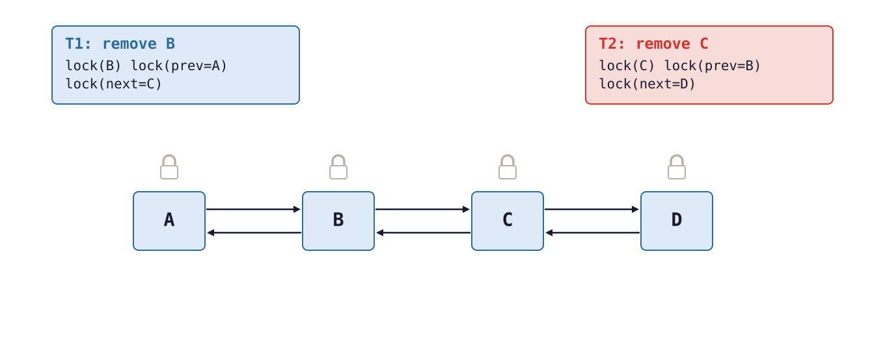</p> --- ### doubly linked list | **removal** 2. each thread locks its **own** node --- ### doubly linked list | **removal** 3. <scb>T1</scb> locks <scb>A</scb>, then **blocks** on <scb>C</scb> <p>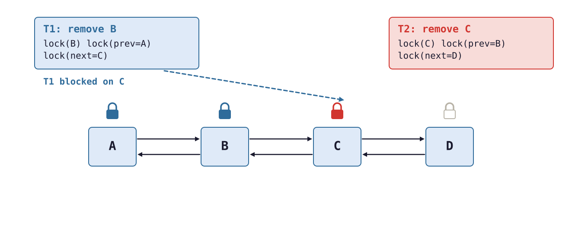</p> --- ### doubly linked list | **removal** 4. <scb>T2</scb> **blocks** on <scb>B</scb> → deadlock! <p>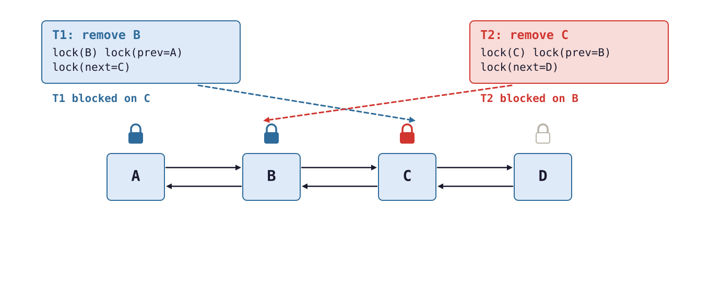</p> --- **observation** → **<span style="background-color: darkred; color: white;"> order </span>** of lock acquisition **matters**! --- ### deadlock | **questions** 1. can we understand **which orders** are dangerous? --- ### deadlock | **questions** 1. can we understand **which orders** are dangerous? 2. can we **prevent** or **avoid** deadlocks? --- ### traffic and **resource contention** --- ### traffic | **resource contention** four one-way roads, traffic flowing <p>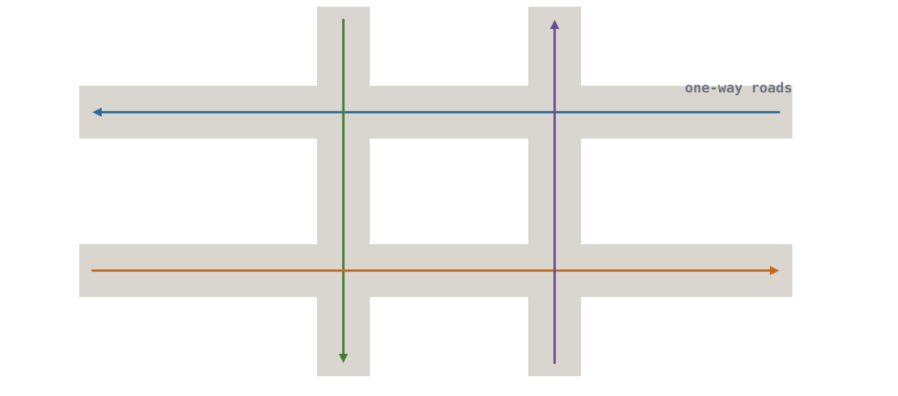</p> --- ### traffic | **resource contention** intersections → **contended resources** <p>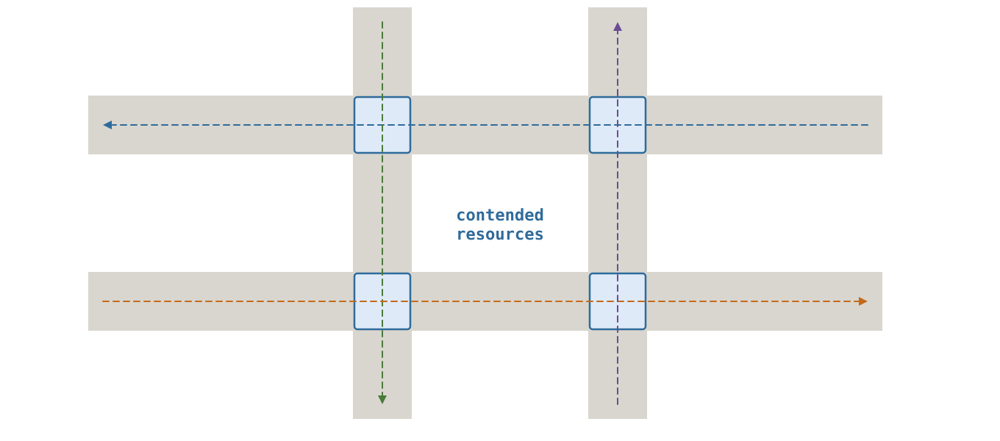</p> --- ### traffic | **resource contention** <scb>F1</scb> gets **both** top intersections → flows through <p>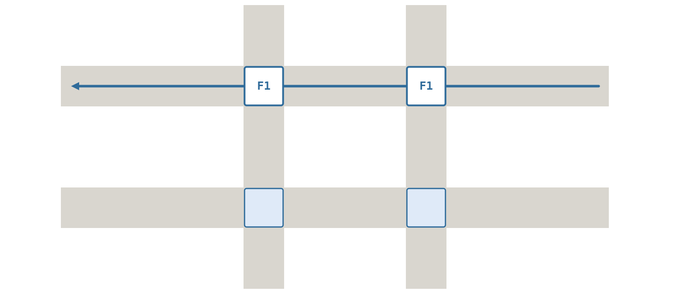</p> --- ### traffic | **resource contention** each flow holds **one** intersection, waits for the **next** <p>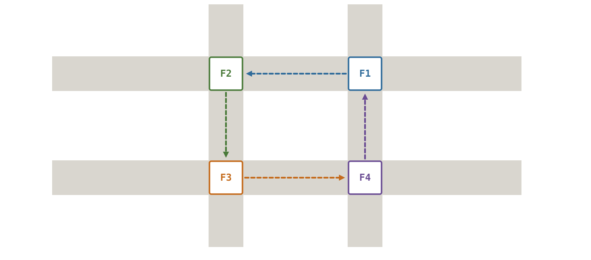</p> --- ## **gridlock!** --- ### traffic | **resource contention** | who | adaptive? | result | |---|---|---| | **humans** | **yes** | squeeze through, eventually | --- ### traffic | **resource contention** | who | adaptive? | result | |---|---|---| | **humans** | **yes** | squeeze through, eventually | | **computers** | **no** | we must **design** for it | || --- ## system **model** --- ### system model | concept | notation | examples | |---|---|---| | resource **types** | <scb>$R_1$</scb>, <scb>$R_2$</scb>, <scb>$R_3$</scb>, … | CPU, devices, memory, data structures | --- ### system model | concept | notation | examples | |---|---|---| | resource **types** | <scb>$R_1$</scb>, <scb>$R_2$</scb>, <scb>$R_3$</scb>, … | CPU, devices, memory, data structures | | **instances** | type <scb>$R_i$</scb> has <scb>$W_i$</scb> instances | bytes of memory, multiple CPUs, counting semaphore | || --- ### system model | **using a resource** | step | lock | memory | |---|---|---| | <scb>request()</scb> | <scb>lock()</scb> | <scb>malloc()</scb> | --- ### system model | **using a resource** | step | lock | memory | |---|---|---| | <scb>request()</scb> | <scb>lock()</scb> | <scb>malloc()</scb> | | <scb>use()</scb> | critical section | read/write it | --- ### system model | **using a resource** | step | lock | memory | |---|---|---| | <scb>request()</scb> | <scb>lock()</scb> | <scb>malloc()</scb> | | <scb>use()</scb> | critical section | read/write it | | <scb>release()</scb> | <scb>unlock()</scb> | <scb>free()</scb> | || --- deadlock can arise if **<span style="background-color: darkred; color: white;"> four conditions </span>** hold **simultaneously** --- ### deadlock | **four conditions** --- ### deadlock | **four conditions** <div class="multicolumn" style="display: grid; grid-template-columns: 40% 60%; gap: 20px; align-items: center;"> <div> <p>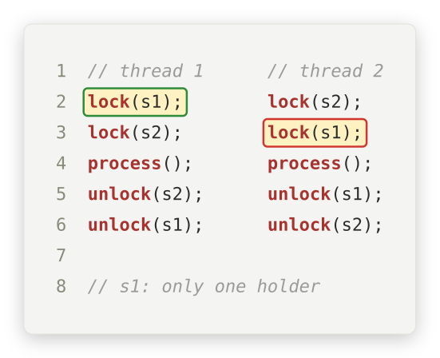</p> <font size="5">[**<font color="green">green</font>** → holds, **<font color="red">red</font>** → waits]</font> </div> <div> | condition | meaning | | --- | --- | | 1. **mutual exclusion** | only **one** process at a time uses resource | </div> </div> --- ### deadlock | **four conditions** <div class="multicolumn" style="display: grid; grid-template-columns: 40% 60%; gap: 20px; align-items: center;"> <div> <p>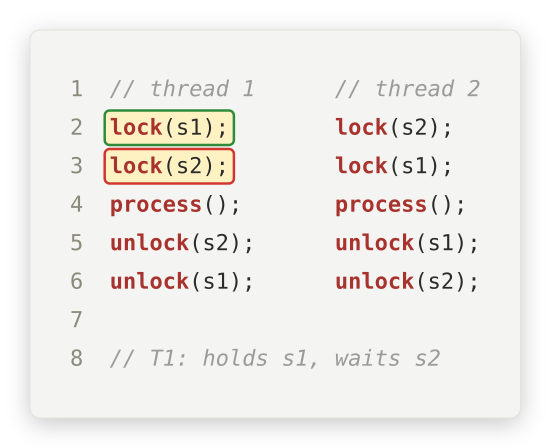</p> <font size="5">[**<font color="green">green</font>** → holds, **<font color="red">red</font>** → waits]</font> </div> <div> | condition | meaning | | --- | --- | | 1. **mutual exclusion** | only **one** process at a time uses resource | | 2. **hold and wait** | holding **one** resource, waiting for **another** | </div> </div> --- ### deadlock | **four conditions** <div class="multicolumn" style="display: grid; grid-template-columns: 40% 60%; gap: 20px; align-items: center;"> <div> <p>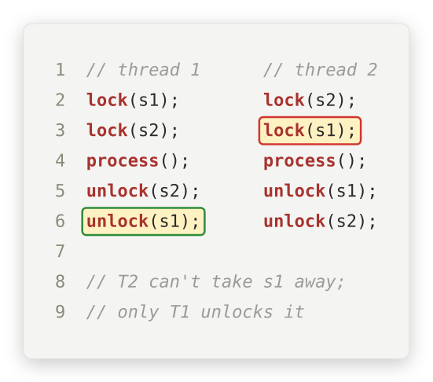</p> <font size="5">[**<font color="green">green</font>** → holds, **<font color="red">red</font>** → waits]</font> </div> <div> | condition | meaning | | --- | --- | | 1. **mutual exclusion** | only **one** process at a time uses resource | | 2. **hold and wait** | holding **one** resource, waiting for **another** | | 3. **no preemption** | released only **voluntarily**, after use | </div> </div> --- ### deadlock | **four conditions** <div class="multicolumn" style="display: grid; grid-template-columns: 40% 60%; gap: 20px; align-items: center;"> <div> <p>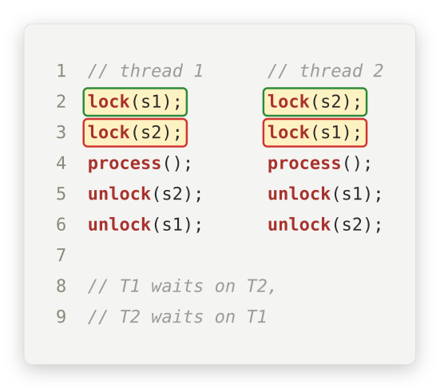</p> <font size="5">[**<font color="green">green</font>** → holds, **<font color="red">red</font>** → waits]</font> </div> <div> | condition | meaning | | --- | --- | | 1. **mutual exclusion** | only **one** process at a time uses resource | | 2. **hold and wait** | holding **one** resource, waiting for **another** | | 3. **no preemption** | released only **voluntarily**, after use | | 4. **circular wait** | <scb>$P_0$</scb> waits for <scb>$P_1$</scb>, <scb>$P_1$</scb> for <scb>$P_2$</scb>, …, <scb>$P_n$</scb> for <scb>$P_0$</scb> | || </div> </div> --- ### deadlock | **four conditions** all four hold → deadlock **guaranteed**? --- ### deadlock | **four conditions** all four hold → deadlock **guaranteed**? <br> <br> ## **no!** --- ### deadlock | **four conditions** "**can**" → depends on **interleaving** --- ### deadlock | **four conditions** <div class="multicolumn" style="display: grid; grid-template-columns: 40% 60%; gap: 20px; align-items: center;"> <div> "**can**" → depends on **interleaving** </div> <div> like race conditions: - **rare** - **hard** to test and debug! </div> </div> --- model deadlocks as a **graph** --- ### deadlock | **resource allocation graph** --- ### deadlock | **resource allocation graph** graph $G = (V, E)$ --- ### deadlock | **resource allocation graph** graph $G = (V, E)$ two types of vertices: - **processes** → $P = \lbrace P_0, P_1, \ldots, P_n \rbrace$ - **resource types** → $R = \lbrace R_1, R_2, \ldots, R_m \rbrace$ --- ### resource allocation graph | **edges** | edge | direction | means | |---|---|---| | **request** | <scb>$P_i \rightarrow R_j$</scb> | <scb>$P_i$</scb> asked, is **waiting** <br> [<scb>lock()</scb>, <scb>malloc()</scb> called] | --- ### resource allocation graph | **edges** | edge | direction | means | |---|---|---| | **request** | <scb>$P_i \rightarrow R_j$</scb> | <scb>$P_i$</scb> asked, is **waiting** <br> [<scb>lock()</scb>, <scb>malloc()</scb> called] | | **assignment** | <scb>$R_j \rightarrow P_i$</scb> | <scb>$P_i$</scb> **holds** one instance <br> [<scb>lock()</scb>, <scb>malloc()</scb> returned] | || --- ### resource allocation graph | **notation** <p>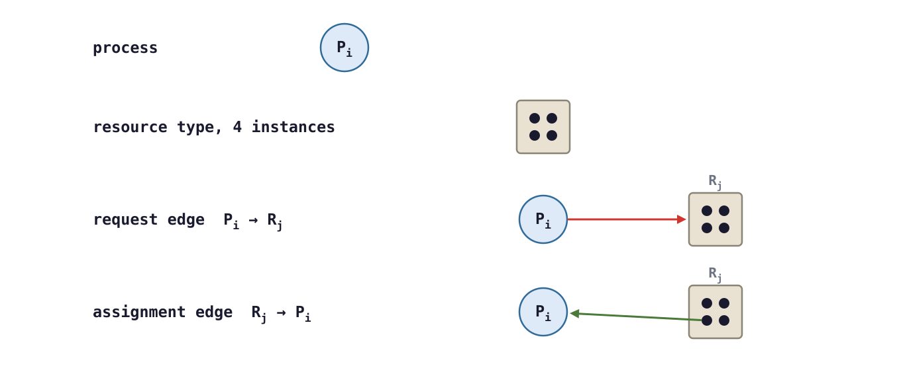</p> --- ### resource allocation graph | **traffic** gridlock → as a graph <p>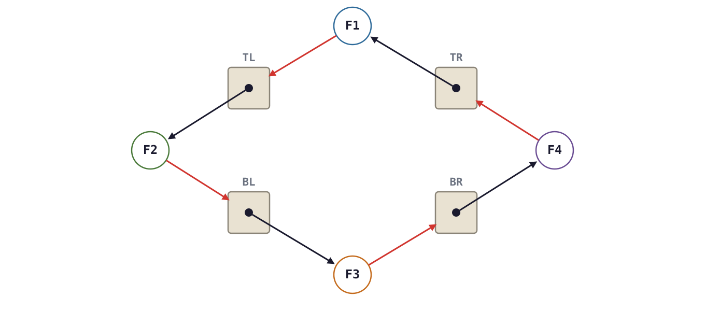</p> --- ### resource allocation graph | **traffic** gridlock → as a graph <div class="multicolumn" style="display: grid; grid-template-columns: 40% 60%; gap: 20px; align-items: center;"> <div> </div> <div> every flow: - **holds** one intersection - **requests** next one <br> result → **<span style="background-color: darkred; color: white;"> cycle! </span>** </div> </div> --- ### example | resource allocation graph --- ### resource allocation graph | **example I** is there a deadlock? <p>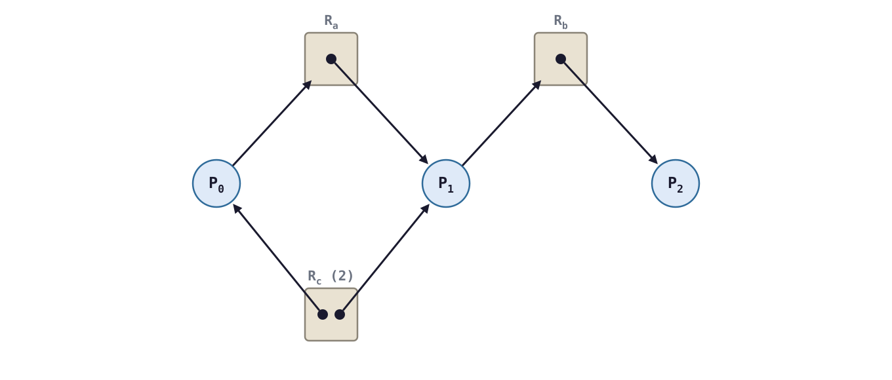</p> --- ### resource allocation graph | **example I** is there a deadlock? ## **no!** --- ### resource allocation graph | **example I** <div class="multicolumn" style="display: grid; grid-template-columns: 40% 60%; gap: 20px; align-items: center;"> <div> is there a deadlock? ## **no!** </div> <div> - <scb>$P_2$</scb> **not waiting** <br> → can release <scb>$R_b$</scb> - then <scb>$P_1$</scb> runs, releases - **no** cycle! </div> </div> --- ### resource allocation graph | **example II** add **one** edge: <scb>$P_2$</scb> requests <scb>$R_c$</scb> <p>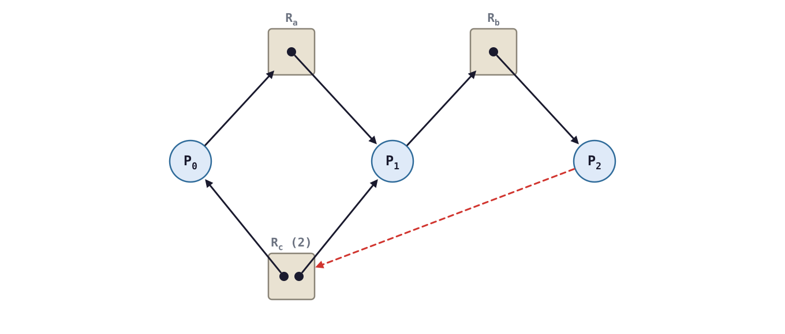</p> --- ### resource allocation graph | **example II** is there a deadlock? <p>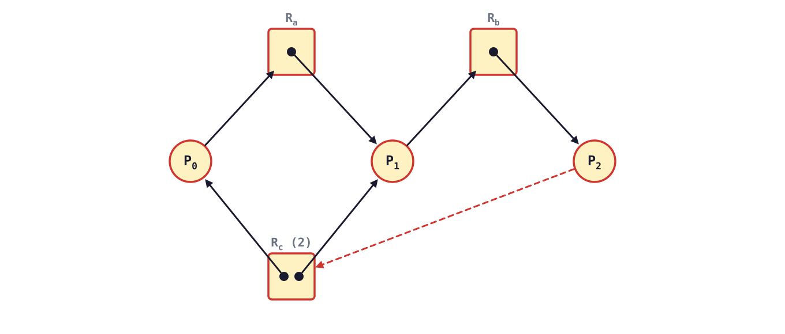</p> --- ### resource allocation graph | **example II** is there a deadlock? ## **yes!** --- ### resource allocation graph | **example II** <div class="multicolumn" style="display: grid; grid-template-columns: 40% 60%; gap: 20px; align-items: center;"> <div> is there a deadlock? ## **yes!** </div> <div> cycle → <scb>$P_0$</scb> → <scb>$R_a$</scb> → <scb>$P_1$</scb> → <scb>$R_b$</scb> → <scb>$P_2$</scb> → <scb>$R_c$</scb> → <scb>$P_0$</scb>, <scb>$P_1$</scb> </div> </div> --- ### resource allocation graph | **example II** cycle → <scb>$P_0$</scb> → <scb>$R_a$</scb> → <scb>$P_1$</scb> → <scb>$R_b$</scb> → <scb>$P_2$</scb> → <scb>$R_c$</scb> → <scb>$P_0$</scb>, <scb>$P_1$</scb> <br> **both** <scb>$R_c$</scb> instances → held by **waiting** processes --- ### resource allocation graph | **example III** is there a deadlock? <p>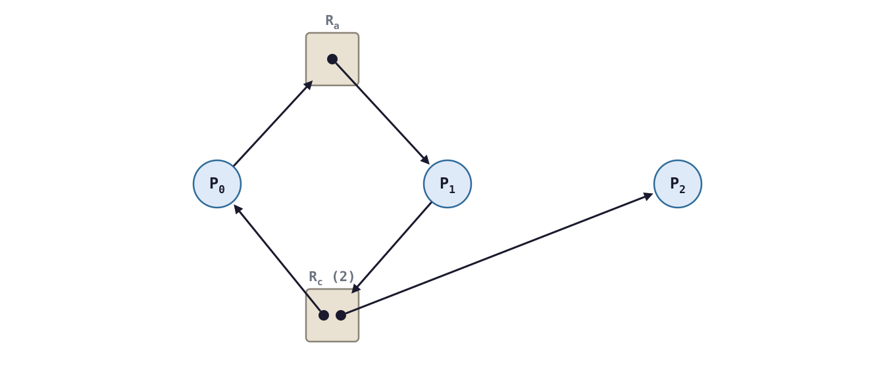</p> --- ### resource allocation graph | **example III** cycle → <scb>$P_0$</scb> → <scb>$R_a$</scb> → <scb>$P_1$</scb> → <scb>$R_c$</scb> → <scb>$P_0$</scb> <p>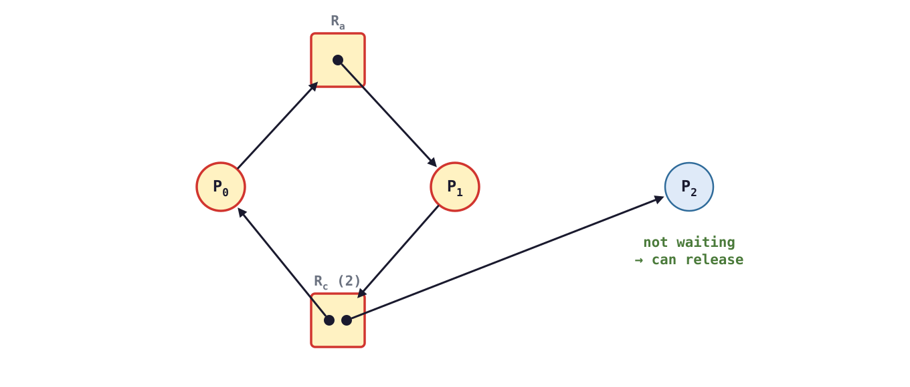</p> --- ### resource allocation graph | **example III** cycle → <scb>$P_0$</scb> → <scb>$R_a$</scb> → <scb>$P_1$</scb> → <scb>$R_c$</scb> → <scb>$P_0$</scb> ## **no!** --- ### resource allocation graph | **example III** <div class="multicolumn" style="display: grid; grid-template-columns: 40% 60%; gap: 20px; align-items: center;"> <div> cycle → <scb>$P_0$</scb> → <scb>$R_a$</scb> → <scb>$P_1$</scb> → <scb>$R_c$</scb> → <scb>$P_0$</scb> ## **no!** </div> <div> <scb>$P_2$</scb> holds **other** <scb>$R_c$</scb> instance → **not waiting** </div> </div --- ### resource allocation graph | **example III** <scb>$P_2$</scb> holds **other** <scb>$R_c$</scb> instance → **not waiting** 1. <scb>$P_2$</scb> releases <scb>$R_c$</scb> --- ### resource allocation graph | **example III** <scb>$P_2$</scb> holds **other** <scb>$R_c$</scb> instance → **not waiting** 1. <scb>$P_2$</scb> releases <scb>$R_c$</scb> 2. <scb>$P_1$</scb> gets <scb>$R_c$</scb>, finishes, releases <scb>$R_a$</scb> --- ### resource allocation graph | **example III** <scb>$P_2$</scb> holds **other** <scb>$R_c$</scb> instance → **not waiting** 1. <scb>$P_2$</scb> releases <scb>$R_c$</scb> 2. <scb>$P_1$</scb> gets <scb>$R_c$</scb>, finishes, releases <scb>$R_a$</scb> 3. <scb>$P_0$</scb> gets <scb>$R_a$</scb> → **progress**! --- ### resource allocation graph | **rules** | cycle? | instances per type | deadlock? | |---|---|---| | **no** | any | **no** | --- ### resource allocation graph | **rules** | cycle? | instances per type | deadlock? | |---|---|---| | **no** | any | **no** | | **yes** | **one** | **yes**! | --- ### resource allocation graph | **rules** | cycle? | instances per type | deadlock? | |---|---|---| | **no** | any | **no** | | **yes** | **one** | **yes**! | | **yes** | **several** | **possible** <br> not certain | || --- four ways to **handle** deadlocks --- ### deadlock | **handling** | approach | when | how | |---|---|---| | **prevention** | design time | make one of the **4 conditions** impossible | --- ### deadlock | **handling** | approach | when | how | |---|---|---| | **prevention** | design time | make one of the **4 conditions** impossible | | **avoidance** | run time | refuse **unsafe** allocations | --- ### deadlock | **handling** | approach | when | how | |---|---|---| | **prevention** | design time | make one of the **4 conditions** impossible | | **avoidance** | run time | refuse **unsafe** allocations | | **detection + recovery** | after the fact | find cycles, **kill** someone | --- ### deadlock | **handling** | approach | when | how | |---|---|---| | **prevention** | design time | make one of the **4 conditions** impossible | | **avoidance** | run time | refuse **unsafe** allocations | | **detection + recovery** | after the fact | find cycles, **kill** someone | | **ignorance** | never | luck + crossed fingers | || most systems → ad hoc **prevention** + **ignorance!** --- _e.g._ <sc>Windows 95/98</sc> → frequent lock-ups <br> many were **deadlocks**! --- prevent **any one** of four conditions! --- ### prevention | **per condition** | condition | prevent it? | how/why | |---|---|---| | **mutual exclusion** | **no** | some resources **need** it | --- ### prevention | **per condition** | condition | prevent it? | how/why | |---|---|---| | **mutual exclusion** | **no** | some resources **need** it | | **hold and wait** | **yes** | request **all** resources at once <br> [all or none] | --- ### prevention | **per condition** | condition | prevent it? | how/why | |---|---|---| | **mutual exclusion** | **no** | some resources **need** it | | **hold and wait** | **yes** | request **all** resources at once <br> [all or none] | | **no preemption** | **yes** | can't get next one? <br> **release** all, retry | --- ### prevention | **per condition** | condition | prevent it? | how/why | |---|---|---| | **mutual exclusion** | **no** | some resources **need** it | | **hold and wait** | **yes** | request **all** resources at once <br> [all or none] | | **no preemption** | **yes** | can't get next one? <br> **release** all, retry | | **circular wait** | **yes** | impose **total order** on resources | || --- ### prevention | **hold and wait** "take everything at once" → one **coarse** lock --- ### prevention | **hold and wait** "take everything at once" → one **coarse** lock but...what's the **catch**? --- ### prevention | **hold and wait cons** - **low** resource utilization --- ### prevention | **hold and wait cons** - **low** resource utilization - **starvation** possible --- ### prevention | **hold and wait cons** - **low** resource utilization - **starvation** possible - applies to memory too - allocate **all** of it up front! --- ### prevention | **no preemption** - take locks one by one <br> → with **try-lock** --- ### prevention | **no preemption** - take locks one by one <br> → with **try-lock** - busy? <br> → **release** everything, try again --- ### prevention | **no preemption** - take locks one by one <br> → with **try-lock** - busy? <br> → **release** everything, try again <br> [similar idea → **optimistic concurrency** in databases] --- let's look at a `code` example using <scb>pthread_mutex_trylock</scb> --- ```C #include <pthread.h> #include <stdio.h> #include <unistd.h> pthread_mutex_t s1 = PTHREAD_MUTEX_INITIALIZER; pthread_mutex_t s2 = PTHREAD_MUTEX_INITIALIZER; int retries[2]; /* take `first` then `second`; if `second` is busy, release `first` and retry */ void lock_both(pthread_mutex_t *first, pthread_mutex_t *second, int id) { while (1) { pthread_mutex_lock(first); usleep(1000); // same window as deadlock_demo.c if (pthread_mutex_trylock(second) == 0) return; // got both! pthread_mutex_unlock(first); // "preempt" ourselves retries[id]++; usleep(100); // back off, try again } } void *thread1(void *arg) { lock_both(&s1, &s2, 0); usleep(1000); printf("thread 1: processing\n"); pthread_mutex_unlock(&s2); pthread_mutex_unlock(&s1); return NULL; } void *thread2(void *arg) { lock_both(&s2, &s1, 1); // opposite order... but no deadlock usleep(1000); printf("thread 2: processing\n"); pthread_mutex_unlock(&s1); pthread_mutex_unlock(&s2); return NULL; } int main(void) { pthread_t t1, t2; pthread_create(&t1, NULL, thread1, NULL); pthread_create(&t2, NULL, thread2, NULL); pthread_join(t1, NULL); pthread_join(t2, NULL); printf("done (retries: %d, %d)\n", retries[0], retries[1]); return 0; } ``` --- ```C [10|12|13|14-15|16-18|23|32] #include <pthread.h> #include <stdio.h> #include <unistd.h> pthread_mutex_t s1 = PTHREAD_MUTEX_INITIALIZER; pthread_mutex_t s2 = PTHREAD_MUTEX_INITIALIZER; int retries[2]; /* take `first` then `second`; if `second` is busy, release `first` and retry */ void lock_both(pthread_mutex_t *first, pthread_mutex_t *second, int id) { while (1) { pthread_mutex_lock(first); usleep(1000); // same window as deadlock_demo.c if (pthread_mutex_trylock(second) == 0) return; // got both! pthread_mutex_unlock(first); // "preempt" ourselves retries[id]++; usleep(100); // back off, try again } } void *thread1(void *arg) { lock_both(&s1, &s2, 0); usleep(1000); printf("thread 1: processing\n"); pthread_mutex_unlock(&s2); pthread_mutex_unlock(&s1); return NULL; } void *thread2(void *arg) { lock_both(&s2, &s1, 1); // opposite order... but no deadlock usleep(1000); printf("thread 2: processing\n"); pthread_mutex_unlock(&s1); pthread_mutex_unlock(&s2); return NULL; } int main(void) { pthread_t t1, t2; pthread_create(&t1, NULL, thread1, NULL); pthread_create(&t2, NULL, thread2, NULL); pthread_join(t1, NULL); pthread_join(t2, NULL); printf("done (retries: %d, %d)\n", retries[0], retries[1]); return 0; } ``` --- ```C #include <pthread.h> #include <stdio.h> #include <unistd.h> pthread_mutex_t s1 = PTHREAD_MUTEX_INITIALIZER; pthread_mutex_t s2 = PTHREAD_MUTEX_INITIALIZER; int retries[2]; /* take `first` then `second`; if `second` is busy, release `first` and retry */ void lock_both(pthread_mutex_t *first, pthread_mutex_t *second, int id) { while (1) { pthread_mutex_lock(first); usleep(1000); // same window as deadlock_demo.c if (pthread_mutex_trylock(second) == 0) return; // got both! pthread_mutex_unlock(first); // "preempt" ourselves retries[id]++; usleep(100); // back off, try again } } void *thread1(void *arg) { lock_both(&s1, &s2, 0); usleep(1000); printf("thread 1: processing\n"); pthread_mutex_unlock(&s2); pthread_mutex_unlock(&s1); return NULL; } void *thread2(void *arg) { lock_both(&s2, &s1, 1); // opposite order... but no deadlock usleep(1000); printf("thread 2: processing\n"); pthread_mutex_unlock(&s1); pthread_mutex_unlock(&s2); return NULL; } int main(void) { pthread_t t1, t2; pthread_create(&t1, NULL, thread1, NULL); pthread_create(&t2, NULL, thread2, NULL); pthread_join(t1, NULL); pthread_join(t2, NULL); printf("done (retries: %d, %d)\n", retries[0], retries[1]); return 0; } ``` --- ### prevention | **try-lock** ``` $ ./trylock_backoff thread 1: processing thread 2: processing done (retries: 1, 0) ``` opposite lock orders → **no** deadlock! --- ### prevention | **try-lock** ``` $ ./trylock_backoff thread 1: processing thread 2: processing done (retries: 1, 0) ``` opposite lock orders → **no** deadlock! - thread 1 backed off **once** [<scb>retries: 1</scb>] Note: - actual runs: 4 of 4 finished with retries (1, 0). see pthread_mutex_trylock(3p). --- ### prevention | **try-lock** [see [pthread_mutex_trylock(3p)](https://man7.org/linux/man-pages/man3/pthread_mutex_trylock.3p.html)] --- **total order** on resources --- ### prevention | **lock ordering** --- ### prevention | **lock ordering** **total order** on resources: - always take locks in **same** order --- ### prevention | **lock ordering** **total order** on resources: - always take locks in **same** order <br> <br> **most common** prevention technique! --- ### lock ordering | **fixed** ```C #include <pthread.h> #include <stdio.h> #include <unistd.h> pthread_mutex_t s1 = PTHREAD_MUTEX_INITIALIZER; // "red" lock pthread_mutex_t s2 = PTHREAD_MUTEX_INITIALIZER; // "blue" lock void *thread1(void *arg) { pthread_mutex_lock(&s1); usleep(1000); // widen the window: let thread 2 run pthread_mutex_lock(&s2); // waits for thread 2... printf("thread 1: processing\n"); pthread_mutex_unlock(&s2); pthread_mutex_unlock(&s1); return NULL; } void *thread2(void *arg) { pthread_mutex_lock(&s1); // same order as thread 1 usleep(1000); pthread_mutex_lock(&s2); printf("thread 2: processing\n"); pthread_mutex_unlock(&s2); pthread_mutex_unlock(&s1); return NULL; } int main(void) { pthread_t t1, t2; pthread_create(&t1, NULL, thread1, NULL); pthread_create(&t2, NULL, thread2, NULL); pthread_join(t1, NULL); pthread_join(t2, NULL); printf("done\n"); return 0; } ``` --- ### lock ordering | **fixed** ```C [8-11|18-19|22] #include <pthread.h> #include <stdio.h> #include <unistd.h> pthread_mutex_t s1 = PTHREAD_MUTEX_INITIALIZER; // "red" lock pthread_mutex_t s2 = PTHREAD_MUTEX_INITIALIZER; // "blue" lock void *thread1(void *arg) { pthread_mutex_lock(&s1); usleep(1000); // widen the window: let thread 2 run pthread_mutex_lock(&s2); // waits for thread 2... printf("thread 1: processing\n"); pthread_mutex_unlock(&s2); pthread_mutex_unlock(&s1); return NULL; } void *thread2(void *arg) { pthread_mutex_lock(&s1); // same order as thread 1 usleep(1000); pthread_mutex_lock(&s2); printf("thread 2: processing\n"); pthread_mutex_unlock(&s2); pthread_mutex_unlock(&s1); return NULL; } int main(void) { pthread_t t1, t2; pthread_create(&t1, NULL, thread1, NULL); pthread_create(&t2, NULL, thread2, NULL); pthread_join(t1, NULL); pthread_join(t2, NULL); printf("done\n"); return 0; } ``` --- ### lock ordering | **fixed** ```C #include <pthread.h> #include <stdio.h> #include <unistd.h> pthread_mutex_t s1 = PTHREAD_MUTEX_INITIALIZER; // "red" lock pthread_mutex_t s2 = PTHREAD_MUTEX_INITIALIZER; // "blue" lock void *thread1(void *arg) { pthread_mutex_lock(&s1); usleep(1000); // widen the window: let thread 2 run pthread_mutex_lock(&s2); // waits for thread 2... printf("thread 1: processing\n"); pthread_mutex_unlock(&s2); pthread_mutex_unlock(&s1); return NULL; } void *thread2(void *arg) { pthread_mutex_lock(&s1); // same order as thread 1 usleep(1000); pthread_mutex_lock(&s2); printf("thread 2: processing\n"); pthread_mutex_unlock(&s2); pthread_mutex_unlock(&s1); return NULL; } int main(void) { pthread_t t1, t2; pthread_create(&t1, NULL, thread1, NULL); pthread_create(&t2, NULL, thread2, NULL); pthread_join(t1, NULL); pthread_join(t2, NULL); printf("done\n"); return 0; } ``` --- ### lock ordering | **runs** | program | 3 runs | result | |---|---|---| | <scb>deadlock_demo</scb> | hung **3**/**3** | exit <scb>124</scb> | --- ### lock ordering | **runs** | program | 3 runs | result | |---|---|---| | <scb>deadlock_demo</scb> | hung **3**/**3** | exit <scb>124</scb> | | <scb>lock_order_fixed</scb> | finished **3**/**3** | <scb>done</scb> | || --- what about **doubly linked list**? --- what about **doubly linked list**? <br> <br> **hand-over-hand** locking → enforces **<span style="background-color: darkred; color: white;"> order! </span>** --- let's look at <scb>xv6</scb> | path lookup [<scb>fs.c</scb>] --- ### <scb>xv6</scb> | <scb>namex()</scb> ```C while((path = skipelem(path, name)) != 0){ ilock(ip); if(ip->type != T_DIR){ iunlockput(ip); return 0; } ... if((next = dirlookup(ip, name, 0)) == 0){ iunlockput(ip); return 0; } iunlockput(ip); ip = next; } ``` --- ### <scb>xv6</scb> | <scb>namex()</scb> ```C [2|3-6|8-11|12|13] while((path = skipelem(path, name)) != 0){ ilock(ip); if(ip->type != T_DIR){ iunlockput(ip); return 0; } ... if((next = dirlookup(ip, name, 0)) == 0){ iunlockput(ip); return 0; } iunlockput(ip); ip = next; } ``` --- ### <scb>xv6</scb> | <scb>namex()</scb> ```C while((path = skipelem(path, name)) != 0){ ilock(ip); if(ip->type != T_DIR){ iunlockput(ip); return 0; } ... if((next = dirlookup(ip, name, 0)) == 0){ iunlockput(ip); return 0; } iunlockput(ip); ip = next; } ``` --- ### <scb>xv6</scb> | <scb>namex()</scb> 1. lock directory <scb>ip</scb> 2. look up <scb>next</scb> --- ### <scb>xv6</scb> | <scb>namex()</scb> 1. lock directory <scb>ip</scb> 2. look up <scb>next</scb> 3. **unlock** <scb>ip</scb> **before** locking <scb>next</scb> --- ### <scb>xv6</scb> | <scb>namex()</scb> 1. lock directory <scb>ip</scb> 2. look up <scb>next</scb> 3. **unlock** <scb>ip</scb> **before** locking <scb>next</scb> <br> never hold **two** inode locks → no lock-order **cycle** <br> <br> [<scb>".."</scb> would lock **upward**!] Note: - fs.c: "The separation also helps avoid deadlock and races during pathname lookup." --- can a thread deadlock **with itself**? --- ### deadlock | **with yourself** can a thread deadlock **with itself**? <div class="multicolumn" style="display: grid; grid-template-columns: 40% 60%; gap: 20px; align-items: center;"> <div> <p>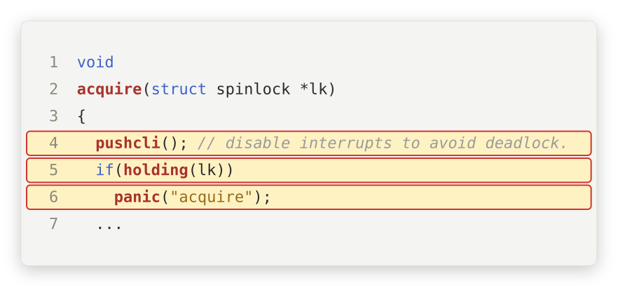</p> </div> <div> | situation | what happens | | --- | --- | | holding spinlock | interrupt arrives | </div> </div> --- ### deadlock | **with yourself** can a thread deadlock **with itself**? <div class="multicolumn" style="display: grid; grid-template-columns: 40% 60%; gap: 20px; align-items: center;"> <div> </div> <div> | situation | what happens | | --- | --- | | holding spinlock | interrupt arrives | | ISR wants **same** lock | spins **forever** on this core! | </div> </div> --- ### deadlock | **with yourself** can a thread deadlock **with itself**? <div class="multicolumn" style="display: grid; grid-template-columns: 40% 60%; gap: 20px; align-items: center;"> <div> </div> <div> | situation | what happens | | --- | --- | | holding spinlock | interrupt arrives | | ISR wants **same** lock | spins **forever** on this core! | | <scb>xv6</scb> fix | <scb>pushcli()</scb> <br> no interrupts while holding | </div> </div> --- ### deadlock | **with yourself** can a thread deadlock **with itself**? <div class="multicolumn" style="display: grid; grid-template-columns: 40% 60%; gap: 20px; align-items: center;"> <div> </div> <div> | situation | what happens | | --- | --- | | holding spinlock | interrupt arrives | | ISR wants **same** lock | spins **forever** on this core! | | <scb>xv6</scb> fix | <scb>pushcli()</scb> <br> no interrupts while holding | | take it **twice**? | <scb>panic("acquire")</scb> | || </div> </div> --- ### deadlock | **with yourself** we saw <scb>pushcli()</scb> before [<scb>spinlock.c</scb>] --- ### deadlock | **with yourself** we saw <scb>pushcli()</scb> last lecture [<scb>spinlock.c</scb>] <br> <br> **this** is why! --- **refuse unsafe** allocations at run time --- ### deadlock | **avoidance** --- ### deadlock | **avoidance** - **dynamically** check each allocation <br> → is it **safe**? --- ### deadlock | **avoidance** - **dynamically** check each allocation <br> → is it **safe**? - processes declare **maximum** resource needs <br> → **a priori** --- ### deadlock | **avoidance** - **dynamically** check each allocation <br> → is it **safe**? - processes declare **maximum** resource needs <br> → **a priori** - refuse allocations <br> → that **could** lead to circular wait --- ### avoidance | **single instance** <scb>F1</scb> asks for <scb>TR</scb> <p>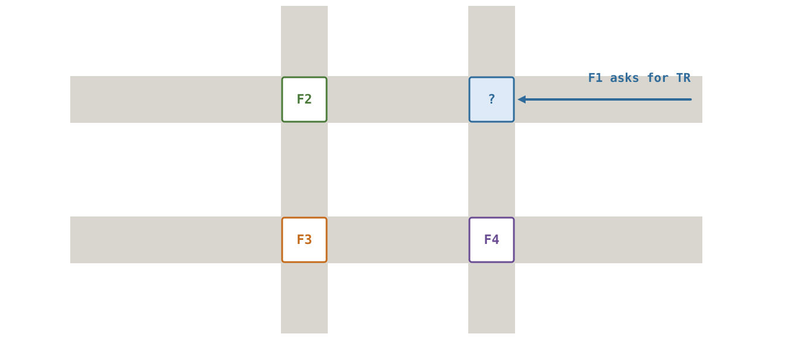</p> --- ### avoidance | **single instance** - granting it → could close **cycle** <p>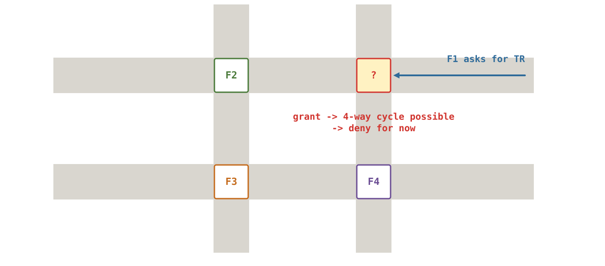</p> --- ### avoidance | **single instance** - granting it → could close **cycle** - **deny** [for now] --- ### avoidance | **algorithms** | resources | algorithm | |---|---| | **single** instance each | avoid **cycles** in resource allocation graph | --- ### avoidance | **algorithms** | resources | algorithm | |---|---| | **single** instance each | avoid **cycles** in resource allocation graph | | **multiple** instances | Dijkstra's [**Banker's algorithm**](https://en.wikipedia.org/wiki/Banker%27s_algorithm) | || [must know **maximum** needs up front → rarely practical] --- periodically **detect** deadlocks --- ### deadlock | **detection** - **periodically** check → is system deadlocked? --- ### deadlock | **detection** - **periodically** check → is system deadlocked? - uses **current** allocations only → **practical** --- ### deadlock | **detection** - **periodically** check → is system deadlocked? - uses **current** allocations only → **practical** - single-instance resources → look for **cycle** --- ### detection | **waits-for graph** start with resource allocation graph <p>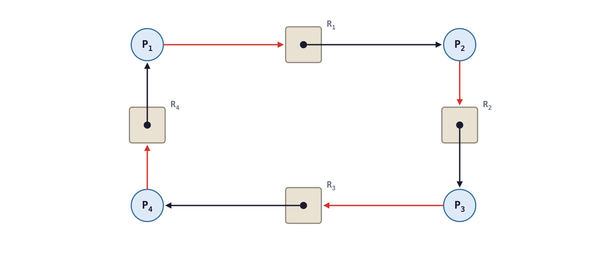</p> --- ### detection | **waits-for graph** collapse resources → **waits-for** graph <p>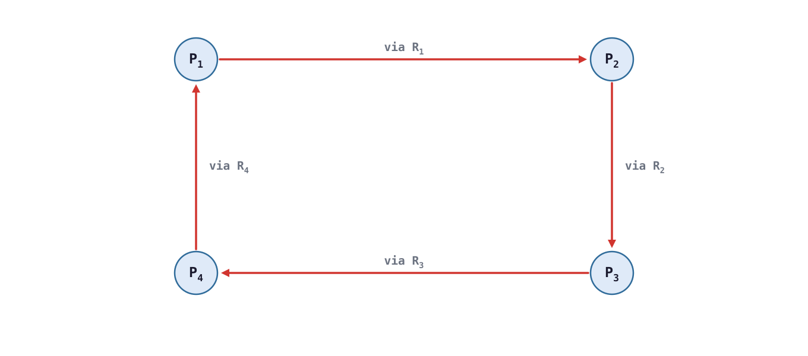</p> --- ### detection | **waits-for graph** | edge | means | |---|---| | <scb>$P_i \rightarrow P_j$</scb> | <scb>$P_i$</scb> **waits** for resource <scb>$P_j$</scb> **holds** | --- ### detection | **waits-for graph** | edge | means | |---|---| | <scb>$P_i \rightarrow P_j$</scb> | <scb>$P_i$</scb> **waits** for resource <scb>$P_j$</scb> **holds** | <br> deadlock ↔ **<span style="background-color: darkred; color: white;"> cycle </span>** --- ### detection | **waits-for graph** | edge | means | |---|---| | <scb>$P_i \rightarrow P_j$</scb> | <scb>$P_i$</scb> **waits** for resource <scb>$P_j$</scb> **holds** | <br> deadlock ↔ **<span style="background-color: darkred; color: white;"> cycle </span>** [cycle detection → classic **interview** question!] --- how do **recover** from a deadlocked system? --- ### deadlock | **recovery** add preemption → **terminate** processes: --- ### deadlock | **recovery** add preemption → **terminate** processes: - abort **all** deadlocked processes --- ### deadlock | **recovery** add preemption → **terminate** processes: - abort **all** deadlocked processes - **or** abort **one at a time** until resolved --- ### deadlock | **recovery** abort one at a time → in which **order**? --- ### recovery | **OOM killer** <sc>Linux</sc> **out-of-memory** [**OOM**] killer <br> → memory "deadlock" recovery --- ### recovery | **OOM killer** <sc>Linux</sc> **out-of-memory** [**OOM**] killer <br> → memory "deadlock" recovery - everyone blocked in <scb>malloc()</scb> --- ### recovery | **OOM killer** <sc>Linux</sc> **out-of-memory** [**OOM**] killer <br> → memory "deadlock" recovery - everyone blocked in <scb>malloc()</scb> <br> <br> who dies? --- who dies? - biggest process? - maybe **most important** one! [_e.g._ <sc>X server</sc>] --- who dies? - biggest process? - maybe **most important** one! [_e.g._ <sc>X server</sc>] <br> **heuristics** → no **perfect** answer --- deadlock **in kernel**? --- deadlock **in kernel**? <br> <br> usually → **<span style="background-color: darkred; color: white;"> reboot! </span>** --- ### deadlock | **summary** --- ### deadlock | **summary** | topic | details | notes | | --- | --- | --- | | cause | **dynamic** resource allocation | locks are resources too! | --- ### deadlock | **summary** | topic | details | notes | | --- | --- | --- | | cause | **dynamic** resource allocation | locks are resources too! | | four conditions | mutual exclusion <br> hold and wait <br> no preemption <br> circular wait | **all** needed | --- ### deadlock | **summary** | topic | details | notes | | --- | --- | --- | | cause | **dynamic** resource allocation | locks are resources too! | | four conditions | mutual exclusion <br> hold and wait <br> no preemption <br> circular wait | **all** needed | | main defense | **total lock order** | per data structure <br> across data structures | --- ### deadlock | **summary** | topic | details | notes | | --- | --- | --- | | cause | **dynamic** resource allocation | locks are resources too! | | four conditions | mutual exclusion <br> hold and wait <br> no preemption <br> circular wait | **all** needed | | main defense | **total lock order** | per data structure <br> across data structures | | also | memory | OOM killer | || --- **next topic** → **scheduling**